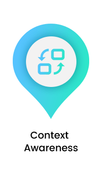
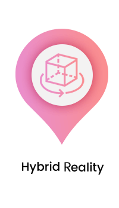

GIS & Digital Transformation
Spatial Transformation - Driving Digital Transformation
NEXT’s GIaaS, a Geospatial platform adds indispensable context to everything from buying habits, to transportation patterns to industrial maintenance needs. Spatial Transformation is still an emerging phenomenon. This transformation is not about any single product, service or technology; it is the change that happens at the merging of overlapping realities in an ever-connected world. At every corner of the tech world, be it from smart cities to factories or from home automation to urbanization, the ever-evolving internet is breaking stereotypes and taking over the world. In accordance with that, a new web is emerging – a contextual, physical and spatial web which is not just an IoT (Internet of Things), but an operating system in itself.
The Four Pillars of the Spatial Transformation
- 
-

- 
Context Awareness
Context awareness indicates devices and spaces that understand human behavior. Through
artificial intelligence, different entities like rooms, buildings or even cities will respond to human
activity. Based on the response, it will automatically predict needs and optimize mobility, energy
grids, public services, supply chain etc.,
NEXT Inc uses Geolocation which is one of the earliest and most widespread forms of contextual
awareness, and it is enabled with all sorts of location-based services. Once devices better
understand human activity, a new generation of context-based services will emerge.

Responsive Environments
Every physical space down to the tiniest item will be addressed, making all tangible objects, a vital part of a connected environment/experience. Vehicles, furniture, appliances, architecture, signage etc., will morph and adapt to the needs, responses and values of all the people physically or virtually present in that space. Autonomous machines, ambient displays, smart materials, and sensors will play a crucial role in this.
Hybrid Reality
Augmented reality, one of the most interesting technological innovations, enables hybrid tangible interactions by meshing with connected objects and turning the whole world into a volumetric display. The digital twin concept will take an entirely new dimension when the virtual representation of the object is co-located with the object itself. This, in turn, ensures that the real-time manipulation of one will affect the other and vice-versa.
Distributed Internet
It is highly important to have a distributed infrastructure at the heart of the physical web. Cryptographic peer-to-peer networks are the key to a distributed infrastructure and they ensure the following.
- Data ownership retainment by users
- A resilient and scalable system
- Interoperability between services and devices
- Privacy setup at the base of the system
Spatial Information Management
Spatial information will drive future prosperity, sustainability, and digital transformation

Bring all Data
Integrate data silos and enable to access the information that is needed from one system. Data should be available to everyone, on any device, all of the time.
Expose Hidden Relationships
Visualize the data as layers on a map to make relationships vividly apparent. Use smart mapping tools to find the best way to represent your data. Explore the impact of adding and removing variables to identify hidden trends and patterns that are often difficult to spot.
Create Actionable Insight
Use a vast range of highly sophisticated spatial analysis tools and techniques to query your data and predict future outcomes. Empower your organization to make informed decisions based on advanced analysis and reliable insights.
Share Intelligence
Empower your entire organization to work off one view of the truth. Story Maps and Web Apps have become extremely popular tools for sharing interactive content in a highly engaging way. Share real-time insights to make sure every department has access to accurate data.
Optimize Mobile Working
Maximize the productivity of your workforce by enabling them to collect and update information while out on the field. GIS mobile apps take away the need for paper processes, and saving time, and improving accuracy and reducing costs. The power of GIS enables organizations by taking advantage of their geographic data. It is a crucial tool that can help shape the world around us. Geography and GIS are becoming all pervasive used as an integrating force, thus leading to new innovative solutions.